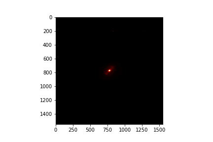
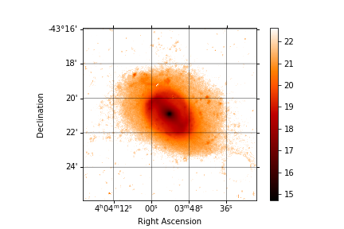

Exercise 14.3#
Your task is to use Astropy to read in a FITS image of a galaxy emission, isolate the region of interest, remove the background noise, calibrate it and save this processed image into a new FITS file. Download the FITS image fits_image.fits and then create a Python script or notebook to do the following.
Read in the FITS image using the astropy.io package and plot it using the matplotlib.pyplot.imshow() function which is used to plot images from 2D arrays. You may wish to change the minimum and maximum colour values in the plot (using the vmin and vmax keyword arguments) to make the features of the image more clear, you should inspect the maximum and minimum values of the data itself to when determining these values.
Your plot should look something like this:

where the keyword arguments:
vmin=1vmax=50cmap='gist_heat'
were used.
Create a New FITS File#
The dark regions of the image are of no interest. Extract a square region of about 600 pixels from the center of the image, and plot this. Create a new FITS file for this smaller sub-image. Make sure to get the RA and Dec of the midpoint coordinates in the original image, and assign those coordinates to the centre pixels of new sub-image (CRVAL1 and CRVAL 2 properties of the header) (WCS will be needed for this).
Investigating Background Noise in the Image#
The measurement contains background noise which should be subtracted in order to clarify the signal data. In this section you will investigate the noise distribution.
From the original full-size image, extract the 400 x 400 pixels making up the top left corner. These pixels are mostly noise pixels. Create a histogram of the values of these pixels, and calculate the mean and standard deviation of this distribution.
The basic noise statistics are given in the FITS header:
The mean of the noise is given by
hdr['SKY']The standard deviation of the noise is given by
hdr['SKYSIG']
Compare your noise sample to this header information by overlaying a normal distribution with these moments over your histogram.
Removing the Background Noise#
Subtract the sky background mean (as given in the header) from your new image data.
Once you have your sky-subtracted image, apply a 2.5-sigma flux cut by setting any pixels with values \(< 2.5~\sigma~\) to non-values (np.nan).
This will get rid of most of the noise.
Calibrating the New Image#
Photometrically calibrate your sky-subtracted, flux-cut sub-image using the apparent magnitude, which can be calculated as: \(\text{MAGZP} -2.5 \log_{10}(\text{image values})\). MAGZP is the magnitude zero point, given in the FITS header.
Once you have made this calibration, make sure to update the BUNIT property of the header to 'app mag'.
Saving and Plotting the New FITS File#
Save the new image data to a new FITS file using fits.writeto().
Finally plot the new image using WCS units for the axes. To do this you may use the WCS object for your new image as a projection for the plot. Example code used to produce a nice plot using this projection is shown below:
ax = plt.subplot(projection=wcs_new)
plt.imshow(img_new, cmap='gist_heat', origin='lower')
ra = ax.coords['ra']
dec = ax.coords['dec']
ra.set_axislabel('Right Ascension', minpad=1)
dec.set_axislabel('Declination', minpad=1)
ra.grid(color='black', alpha=0.5, linestyle='solid')
dec.grid(color='black', alpha=0.5, linestyle='solid')
plt.colorbar()
plt.show()
which should produce a plot that looks like:

Note that the plot uses a linear colour stretch as the image is in units of mag/arcsec\(^2\), which automatically provides us with a logarithmic scale for values.